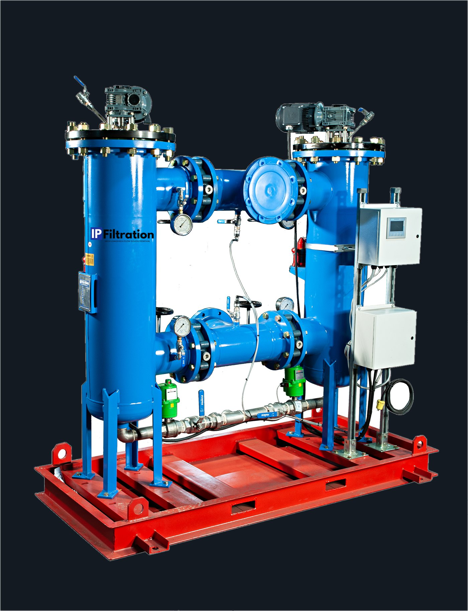

From the fully automated self-cleaning strainer to Texas-made depth filters, every product is engineered for high-load, high-flow produced water service.
One unit, fully enclosed and automated, that takes solids out of produced water at the inlet of a disposal well. Rotating internal brushes continuously scrape a wedge-wire basket, holding flow and keeping pressure drop low. Solids drop to the purge chamber and discharge on a timer or differential pressure — without interrupting flow.
Because it does not backwash, it handles fluid that blinds off a conventional filter. On thick emulsion it keeps running and breaks it, which is why the same unit earns its keep at an oil recovery facility as well as at an SWD inlet — same machine, different place in the process.

Our high-flow vessels hold Coleman Filter Company Torpedo string-wound depth cartridges to efficiently remove suspended solids from large volumes of water. Low pressure drop, long service life, and reduced downtime — engineered for high-capacity, durable performance. Available on rental, purchase, or lease-to-own.
Large-diameter depth filters that replace surface filters which blind off quickly in harsh environments. As a premier distributor of Coleman Filter Company, we stock the full line.
A full line of string-wound filters manufactured in Texas at Coleman Filter Company's facility. Supplied from 9" to 72" in length and up to 6" in diameter, with every media option available.
Every published number for the Automated Self-Cleaning Strainer / 98 Series Produced Water System, in one place.
| Specification | Value |
|---|---|
| Design code | ASME U-coded |
| Materials of construction | SS316L heavy wall with epoxy coating; other alloys available |
| Screen type | Wedge wire, SS316 |
| Screen sizes (standard) | 50, 100, 150, 200, 300 µm |
| Screen range (available) | 50–500 µm standard; coarse pre-screen builds to 3,600 µm on request |
| Design rating | 150 psi / 200°F standard; ANSI 600 optional |
| Inlet / outlet | 10" CL150 standard (8" 150# on the stand-alone unit); other sizes on request |
| Flow rate | Up to 50,000 bbl/day per system; 30,000–50,000 bbl/day typical duplex |
| Configuration | Duplex — two strainer housings in parallel on one skid |
| Service access | Integrated headlift, forklift pockets and lift points; one operator, no special tools |
| Component | Specification |
|---|---|
| Basket | Heavy-duty wedge wire, SS316 |
| Scraper | Rotating heavy-gauge bristle brushes, SS316 |
| Shaft seal | Single-cartridge mechanical seal, SS316 |
| Motor | HP-rated, NEMA 56C TEFC, wired from panel |
| Purge valve | 2" or 3" SS316 ball valve, electric actuator |
| Inlet / outlet valves | Butterfly, all electric-actuated |
| Instrumentation | Dual sight glasses per housing, diaphragm-isolated pressure gauges, inlet and outlet sample ports |
| Specification | Value |
|---|---|
| HMI | Siemens SIMATIC 7" touchscreen |
| dP transmitters | Dual, 0–160 psi, user-adjustable setpoint |
| Operating modes | Off / Semi-Auto (dP only) / Auto (dP plus timed) |
| Typical setpoints | dP 5 psi · cleaning interval 60 min · cleaning duration 120 s · purge duration 5 s |
| Power — standard | 120 VAC non-GFCI |
| Power — optional | 230 V, 380–480 V, 600 V |
| Remote access | Cellular VPN, per-user access on existing company email addresses |
| Datalogging | On-screen and remote; interfaces with SCADA |
| Consumables | None |
| Application | Screen size | What it delivers |
|---|---|---|
| SWD — between charge pump and H-pump | 50–300 µm | Longer H-pump rebuild intervals, fewer solids downhole |
| SWD — incoming, pre tank battery | 300–500 µm, then 150–50 µm (2-stage available) | Splits emulsions, less tank cleaning, more sellable oil, solids-free water |
| Recycle and reuse — pre and post AST | 300–500 µm and 150–50 µm | Fewer tank cleanings; recirculation loop lets an AST be cleaned in service |
| Oil reclamation — emulsion splitting | 300–500 µm and 150–50 µm | More sellable oil, sharply lower disposal volume |
Standard baskets run 50 to 500 micron, with 50, 100, 150, 200 and 300 micron as the stocked sizes. Coarse pre-screen builds up to 3,600 micron are available on request. On an SWD inlet we normally start at 50 micron — field testing on skimmed AST material showed a coarser first stage was not necessary.
Up to 50,000 barrels per day per system. A standard duplex skid — two strainer housings in parallel — typically runs 30,000 to 50,000 bbl/day.
No. Rotating SS316 brushes scrape the wedge-wire basket mechanically and solids drop into a sump that purges to a bin or pit. There is no backwash line, no lost fluid volume, and no wastewater stream created by the cleaning cycle. Clean flow continues through the vessel the entire time.
Across a fleet of 25 units running 24/7 for 20 months, total direct operating cost worked out to about $0.01 per barrel. There are no filter bags, socks, cartridges or other consumables to buy or dispose of. For capital and rental pricing, tell us your flow rate, solids profile and where the unit sits in your process and we will quote the configuration.
Yes. We deliver and install a unit on your site and you run it on your own water for 60 days at no cost. Keep it or we pick it up.
Power and a dirty water line. Standard supply is 120 VAC non-GFCI, with 230 V, 380–480 V and 600 V available. The unit is skid-mounted with forklift pockets and lift points.
Yes. Every unit ships with a 7" Siemens SIMATIC HMI and cellular VPN access, with per-user logins on your existing company email addresses. Operators can change the dP setpoint and cleaning intervals without driving to location, and the unit datalogs on-screen and remotely. It interfaces with SCADA.
The vessels are ASME U-coded SS316L heavy wall with an epoxy coating, built for H₂S, CO₂, chlorides and sour service. Other alloys are available where the water demands it.
Tell us your flow rate, solids profile, and where it sits in your process. We'll recommend the right configuration.
Get a recommendation →